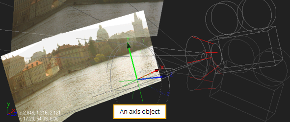
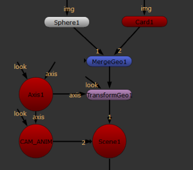
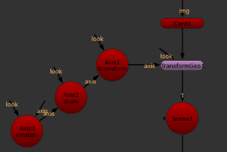

An axis object works as a null object by adding a new transformational axis to which other objects may be parented. Even when objects already have their own internal axes, it’s sometimes useful to parent in a separate axis.
For example, the Axis node has been parented to the other objects in the scenes (the two image planes and the camera). The result is an axis object that globally controls the scene. Rotating it, for example, rotates all objects in the scene, as the figure below shows.
|
 |
| Rotating an entire scene with an axis object. |
TIP: To move several objects together, you can also merge them using a MergeGeo node (see Merging Objects) and then control them using a TransformGeo node (see Using the TransformGeo Node).
| 1. | Click 3D > Axis to insert an Axis node. |
| 2. | To create the parent relationships, connect the Axis node to all object nodes you wish to control with the Axis transformation controls. |

To create a nested transformational hierarchy, chain additional Axis nodes to the first one you inserted. For example, you could create a hierarchy of three Axis nodes to control rotation, scale, and transform.
|
 |
|
Creating a nested transformational |
In the above example, Axis3 (rotation) is connected to Axis2 (scale). Axis2 is connected to Axis1 (transform), and Axis1 is connected to the TransformGeo node(s) that you want to affect. With the Axis nodes connected in this manner, their transformation data ripples down the chain and is added to the settings of the TransformGeo node.
You can use the optional look input of the Axis node, so that the axis automatically rotates to face towards the connected input. You can attach a Camera, Light, or Axis node to the look input. For example, you can connect an Camera node to the look input so that the axis rotates to face the camera, wherever it is moved. See Inserting Direct Lights, Point Lights, or Spot Lights or Working with Cameras for an example.
|
|